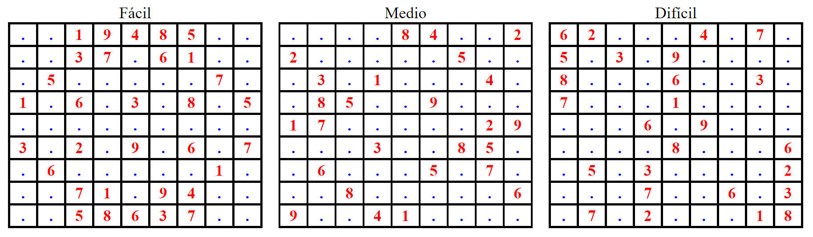
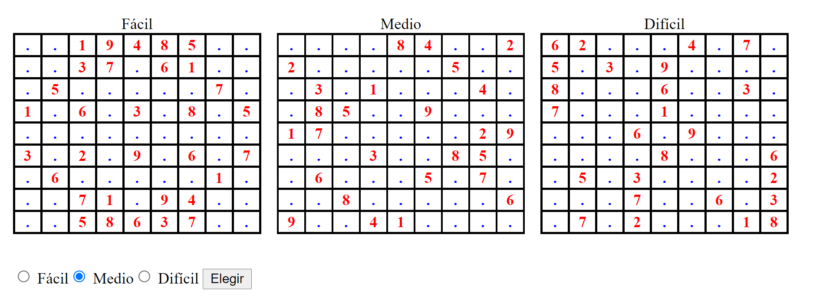
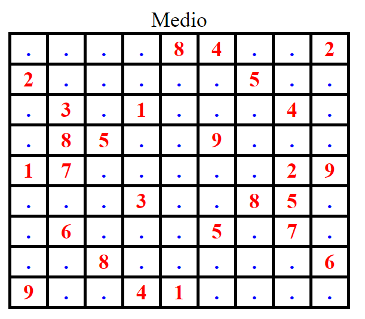

1.1.- Ejercicio 1: Selección de nivel y sudoku inicial
Realizar un fichero php donde se definan tres arrays de 9x9 elementos enteros, para almacenar los siguientes 3 sudokus iniciales de tres niveles de dificultad distintos:

Los lugares en los que no haya un número, tendrán un valor igual a cero. El resto de valores estarán comprendidos entre 1 y 9.
b) Realizar un script php, llamado index1.php que incluya el archivo anterior y que permita al usuario visualizar los tres sudokus iniciales y seleccionar, mediante un formulario, uno de los tres según su dificultad. La dificultad del sudoku será:
- Fácil para el primero (valor seleccionado por defecto)
- Medio para el segundo
- Difícil para el tercero
La página tendrá un aspecto similar a éste:

Una vez que el usuario haya seleccionado el nivel de dificultad y pulse el botón elegir se enviarán mediante POST el sudoku elegido y el nivel de dificultad y se mostrarán en otro script php.
El resultado será una página similar a ésta:

A tener en cuenta:
Para la realización de los anteriores scripts hay que desarrollar otro archivo php que contenga una función necesaria para el desarrollo:
- Mostrar un tablero inicial, que se llamará tres veces en el primer script y una en el segundo.
En el ejemplo se ha mostrado un punto en las celdas en las que no hay número inicial (es decir 0).
También debe realizarse un archivo css para dotar de estilo a las páginas generadas (bordes, colores, etc.)
Debes conocer
En el segundo script, el sudoku inicial NO se incluye, sino que se envía por POST.
Para enviar variables mediante POST a otro script, se puede usar un input oculto mandando el valor. En este caso, al tratarse de una estructura más compleja (un array de dos dimensiones) hay que hacer las operaciones de codificación y serialización:
En el script de envío, codificar y serializar el array y enviar el resultado. Ejemplo:
$arrayCodificado = base64_encode(serialize($miArray));
En el script de recepción, decodificar y de-serilizar el dato recibido mediante POST. Ejemplo:
$miArray = unserialize(base64_decode($arrayCodificado));
No pueden usarse sesiones, ya que no está aún descrito este concepto en la unidad 1.